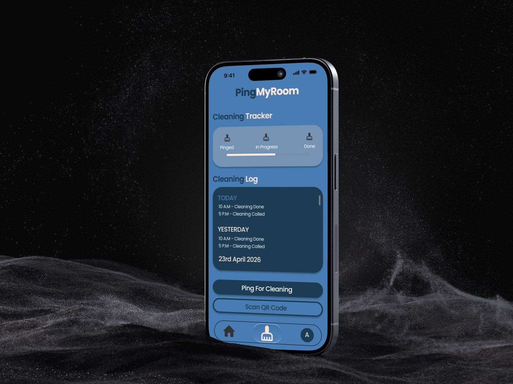
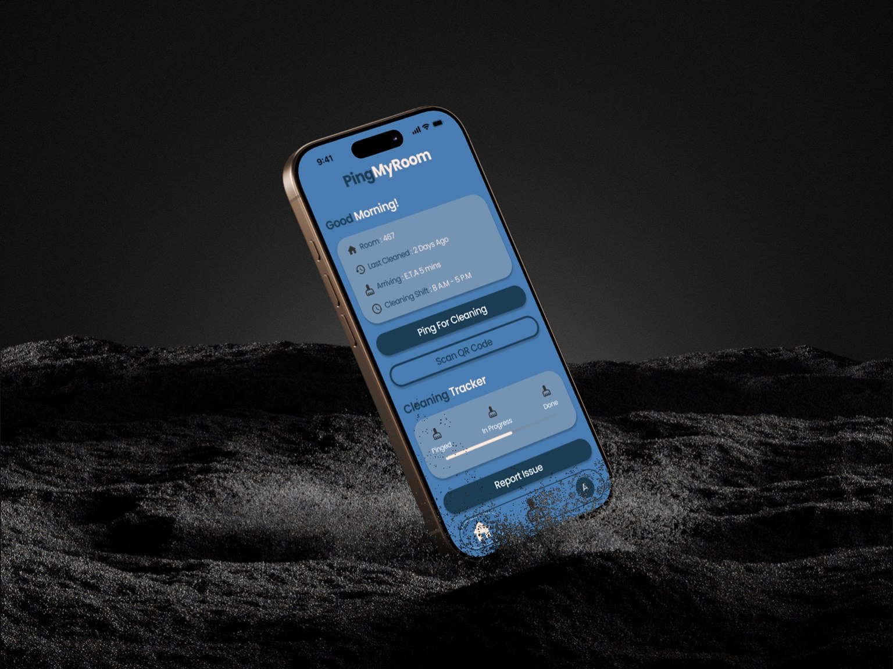

002 / Case StudyPING
PING
MYROOM
A hostel utility app designed around one-tap cleaning requests, real-time status visibility, and simple issue reporting.
Download PDF
CONTEXT
PingMyRoom is a mobile application concept for hostel students to request room cleaning, track status, and report issues through one centralized system.
PROBLEM
Hostel cleaning requests are often handled through informal systems like word-of-mouth, phone calls, or messaging groups. This creates delays, poor accountability, and uncertainty about whether a request was received.
GOAL
- Enable one-tap cleaning requests.
- Provide clear status tracking.
- Simplify issue reporting.
- Improve clarity and reduce repeated follow-ups.
PROCESS
- Used product research and observational insights from hostel workflows.
- Prioritized speed-first interaction with a clear primary CTA.
- Created a visual tracker: Pinged → In Progress → Done.
- Structured issue reporting into simple categories instead of long forms.
OUTCOME
The design turns an informal service process into a structured, transparent flow. It focuses on the real user need: knowing whether a request was received, when it will be handled, and what stage it is currently in.
VISUALS
